k-Day 128｜礦區
起床看了風圖，風速已經減弱，不過早上的逆風還是有點強。不急著出發，幫輪胎打氣，坐在地上吃昨天買的海綿蛋糕。
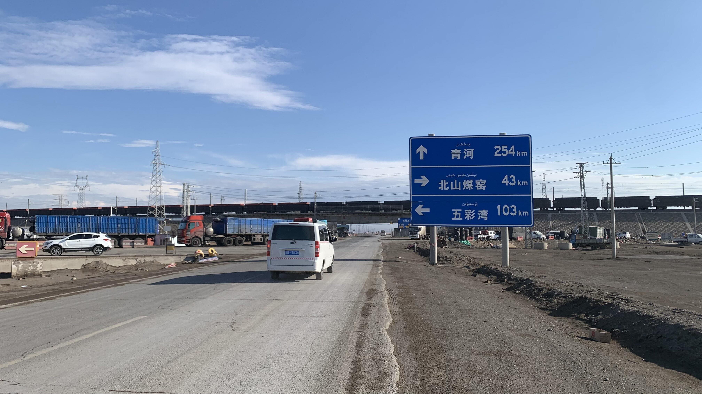
228省道沿線都是礦區，往五彩灣方向又更密集了一些。
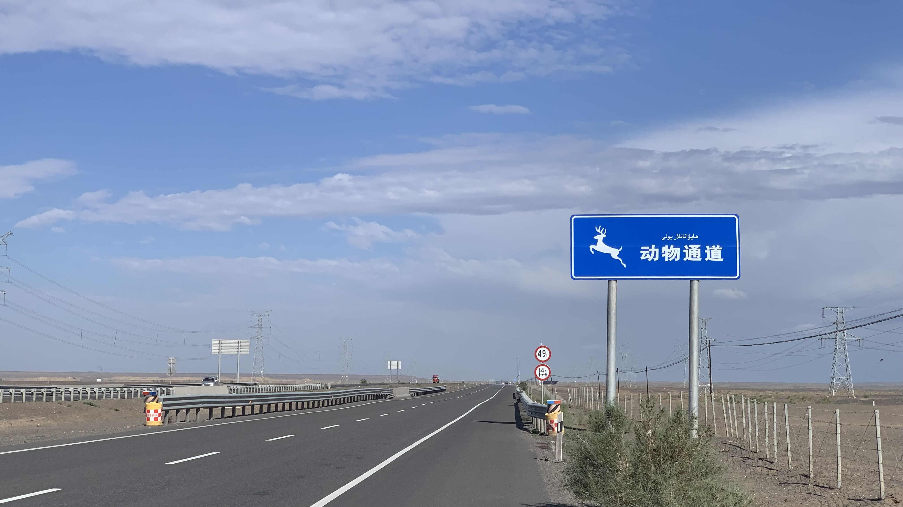
今天已經看到好幾個動物通道，看來不是隨便興建的。
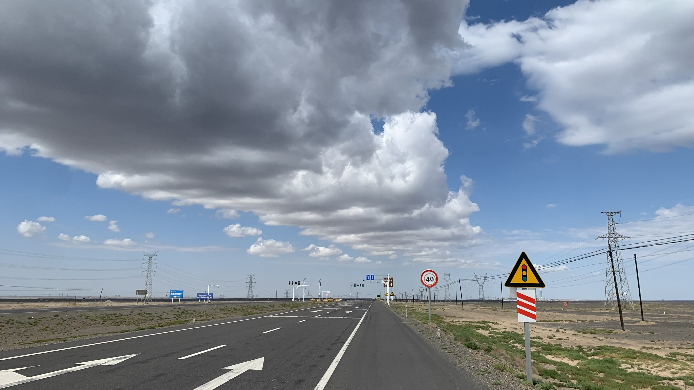
天氣過於晴朗，緩上坡搭配逆風騎起來有些無趣。點開環法賽影片服用，想像自己追著選手們跑，五公里左右就抽筋了。
還是按照自己的步調慢慢爬吧。
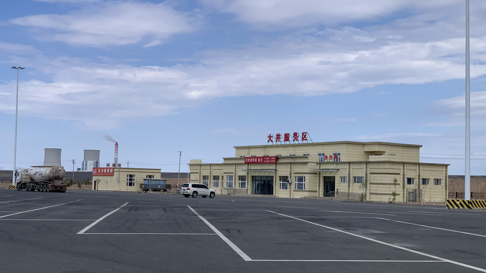
中午抵達大井休息站，這裡的車流比起將軍廟少了許多。
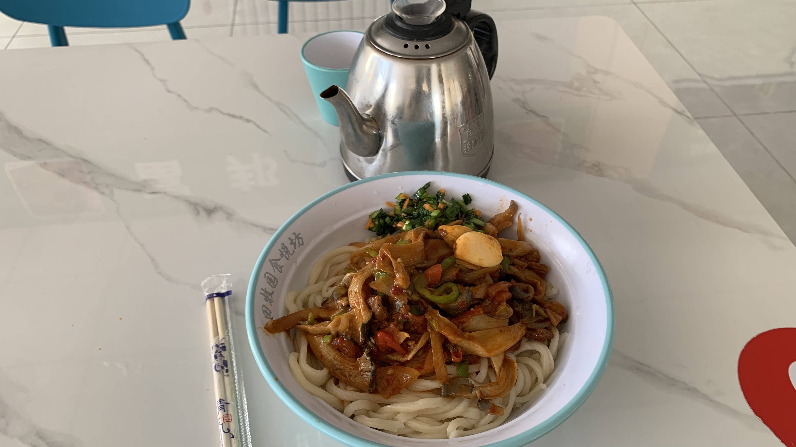
點了一碗蘑菇肉拌麵。手工麵，稍微煮過頭，麵體還是相當有彈性，肉量不多，蘑菇的後味帶點苦澀。
美味的關鍵在櫃檯上的醃蒜頭和鹹韭菜。
吃飽後買瓶咖啡坐在沙發上發呆，行動電源也可以免費充電。這裡的天黑時間大概是晚上九點半，只要在晚上八點前抵達五彩灣休息站就沒問題。
不小心在沙發上睡著，睜開眼睛已經下午兩點，洗洗臉繼續曬太陽。
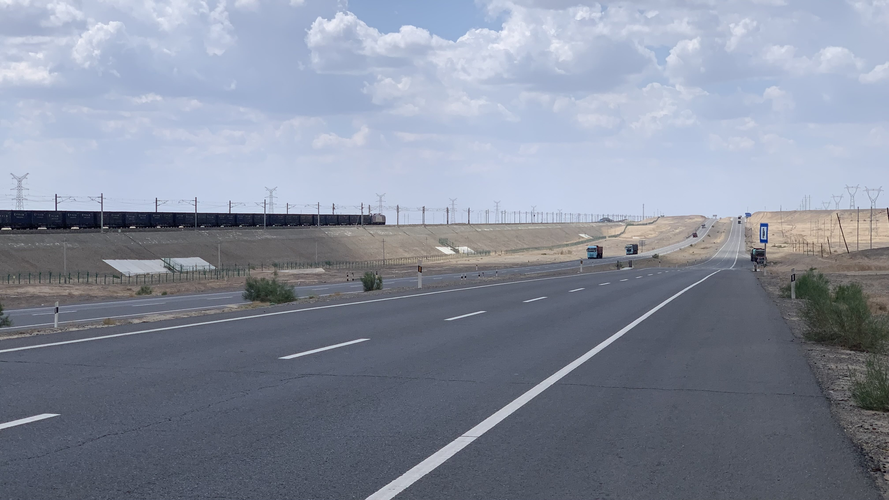
礦區的交通工具有火車和卡車。
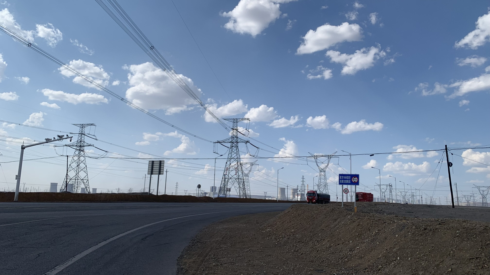
景觀也是密集的煙囪和電纜。
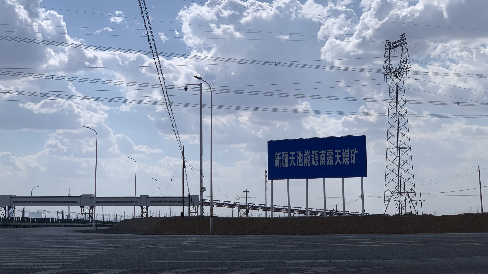
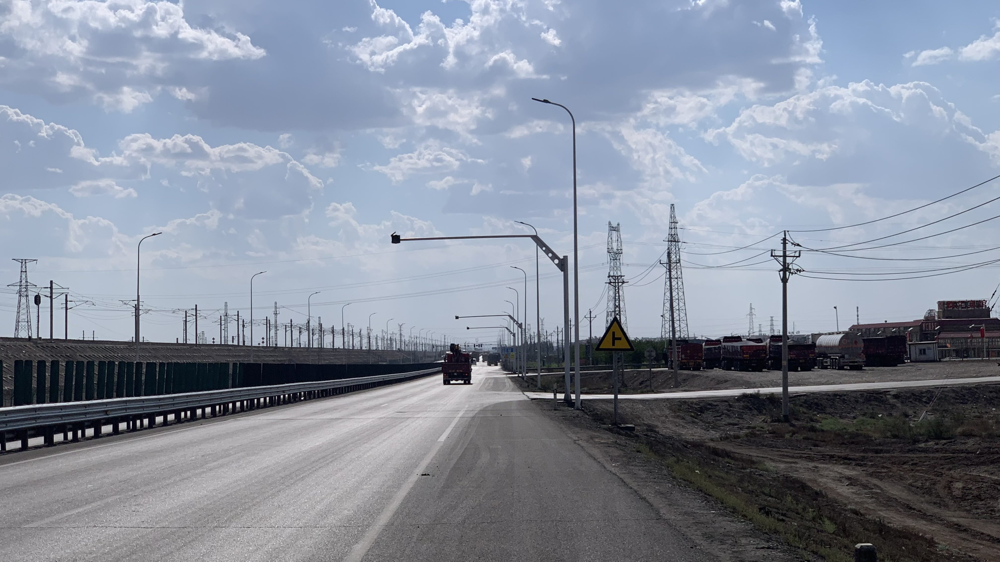
路邊的地應該都數於私人企業，到不遠處的休息站扎營吧。
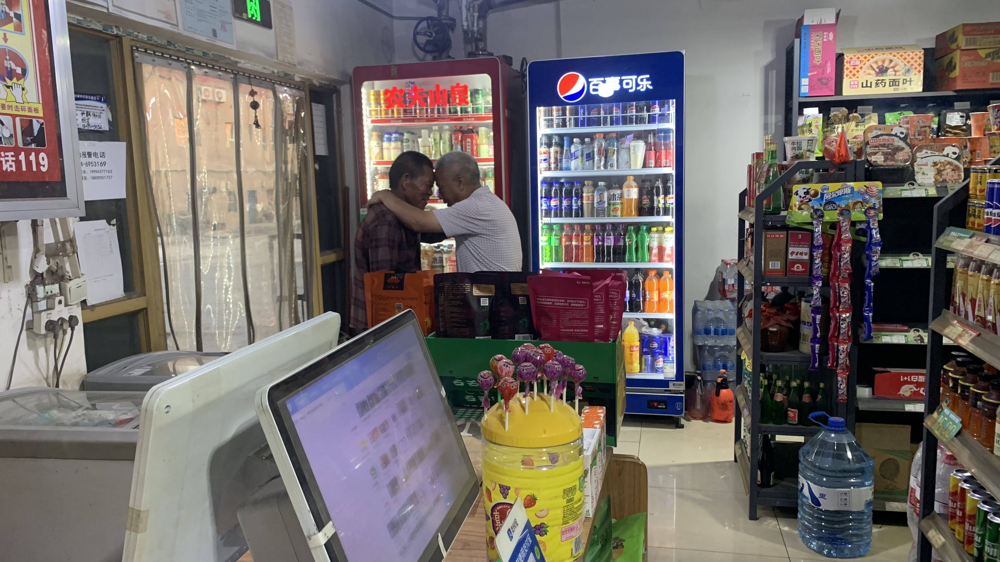
是這樣的，白襯衫老伯喝醉了，紅襯衫老伯要幫他買解酒飲料。白襯衫老伯不要紅襯衫老伯付錢，但他自己又醉到掃不了條碼，兩人拉拉扯扯一陣，突然就這樣抱在一起。
我也是很意外的，只是在超商買個東西就看到這一切。
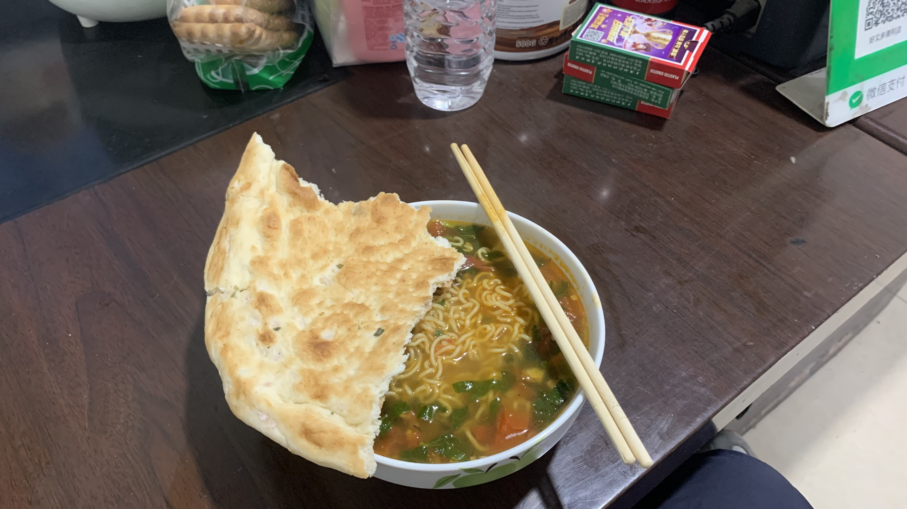
超商老闆問我晚上要吃啥，我說想買個泡麵，於是乎他就到外面院子拔了幾根菜。
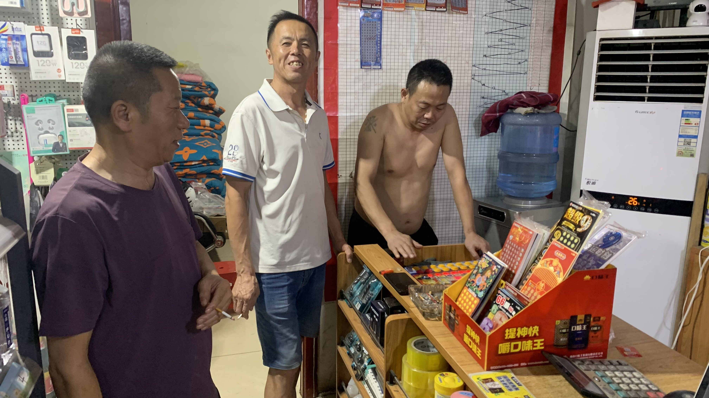
超市的客人似乎也是附近餐廳民宿的老闆，玩到十一點各自被老婆領回家。
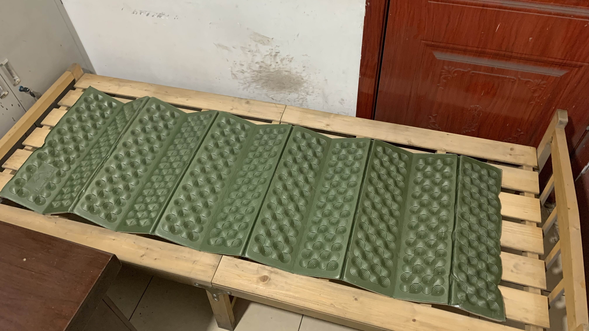
本來答應讓我在關門後的門口搭帳篷，老闆突然說要不就睡在店裡的房間吧。拉了一張床板，攤開後連門都出不去，幸好已經先上過廁所。接連被超商老闆收留呢。
今日花費：早餐 22、午餐 21、飲料 3、咖啡 7、濕紙巾 4、飲料糧食 29元